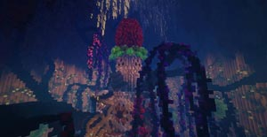
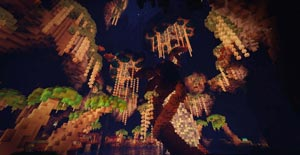
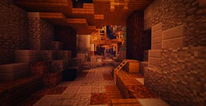
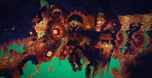
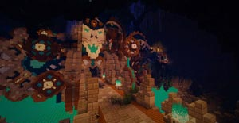
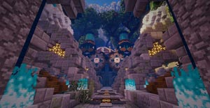
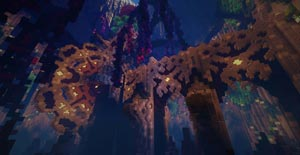
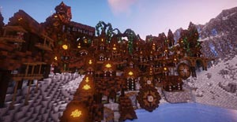
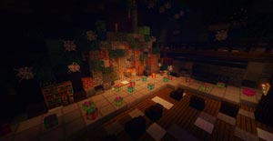

夢都秘境 Mysterious Territory
前言
這是一個屬於夢想之都團員們的奇思妙想之地。
在每個 50x50x50 的區域大小中，企劃、建築材質到指令都各具特色！
而身為冒險者的你，能夠通過夢想之都的秘境中的考驗嗎？
地圖預告片
動畫製作：兔乃 | 音樂製作：Ｄ４Ｊ | 後製剪接：葛雷特
劇情動畫片
動畫製作：兔乃 | 音樂製作：Ｄ４Ｊ
地圖場景









遊戲說明
顯示設定
- 亮度：明亮
- 雲層：關閉
- 視野距離：８以上
- 粒子特效：少量以上
- 遊戲難度：非和平模式
注意事項
- 請務必安裝「指定材質包」
- 建議遊玩人數：１～２人
- 地圖預設：防爆、不防噴
- 此頁面圖片、影片皆為夢想之都工作室所有，若需使用請至粉專私訊詢問
- 如玩家在以下關卡中出現無法通關之情形，可使用下列指令強制通關
- 沉默伊塔：/function ray:debug
- 冰川地獄：/function loom:debug
- 老鼠洞窟：/function mouse_cave:debug
- 沉默伊塔：/function ray:debug
- 冰川地獄：/function loom:debug
- 老鼠洞窟：/function mouse_cave:debug